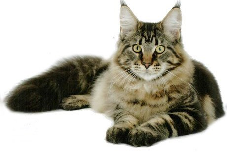
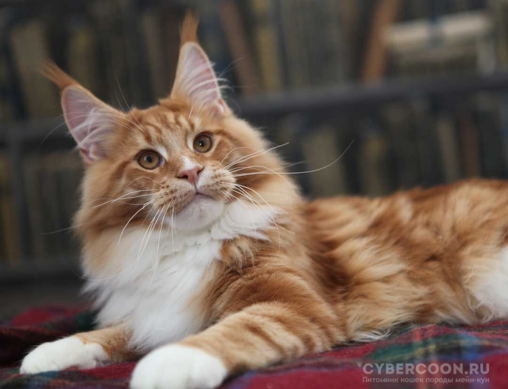

Уникальная енотовидная кошка, зародившаяся в Америке, Мейн-кун, привлекает внимание миллионов любителей кошачьих, по всему миру.Внутри породного стандарта существует также деление на два типа: американский и европейский типы. Это связано с историей развития породы Мейн-кун. Как уже было сказано, Мейн-куны берут свое начало в Америке. Отсюда и происходит американский тип. Дальнейшее же становление порода получила уже в Европе. Именно там американские аборигены приобретали свои уникальные внешние признаки, отличающие, кошек Мейн-кун и по сей день. Тем, кто интересуется этой удивительной породой, или же стремиться завести себе котенка Мейн-куна, будет полезно узнать, в чем же отличия европейского и американского типов.
Американский Мейн-кун
«Американцы» по праву считаются классическими представителями породы
Их можно узнать по следующим характерным признакам:
- крупное тело;
- мощное телосложение;
- широкая грудина;
- хорошо развитая мускалатура;
- массивная голова;
- короткая мордочка;
- высокий лоб;
- круглые, широко распахнутые глаза;
- небольшие, широко расставленные уши. 
Мейн-куны европейского типа
Европейский тип появился сравнительно недавно: в 70-х годах ХХ века. Современное селекционное разведение направлено на усовершенствование типа. Другими словами, цель селекционеров: сделать «европейцев» более отличными от исходного типа.
Отсюда их характерные признаки:
- длинное тело;
- длинные, узкие лапы;
- вытянутая мордочка;
- длинный хвост;
- низкий лоб;
- узкие раскосые глаза, широко расставленные;
- прямые длинные уши;
- рысьи кисточки на ушах;
- мощный подюородок 